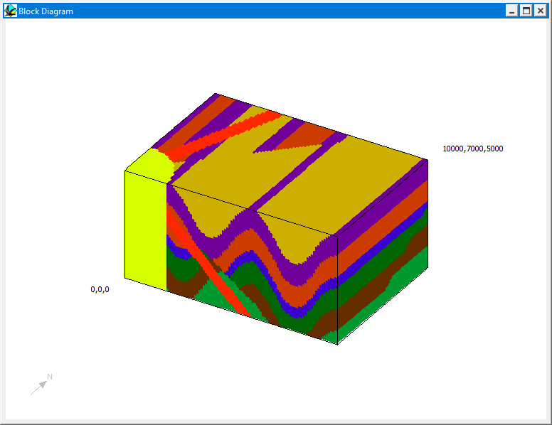
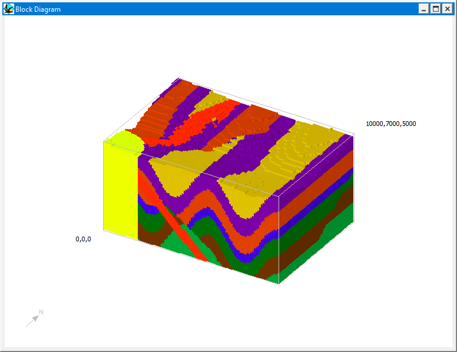
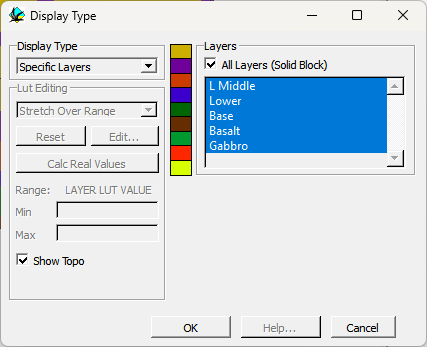
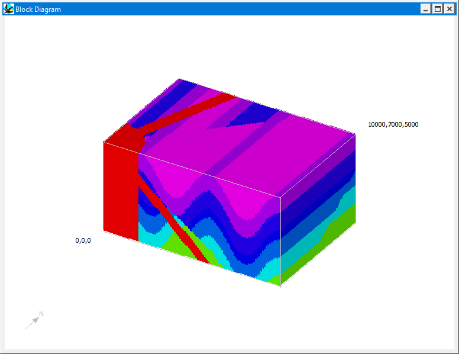

Block diagrams
Block diagrams can be viewed as soon as the base stratigraphy has been defined, and are selected by choosing Block Diagram from the Geology menu.

The scale and initial orientation of the block diagram can be defined in the Geology Display Options Window.
The block view is an interactive view and the following actions change the displayed information:
a) Dragging the mouse in the window with the mouse button held down rotates the block in the window. The four side faces and the top face may be viewed from any angle.
b) Holding the shift key down while dragging the mouse in the window rescales the block in the window.
c) Resizing the window itself rescales the block the next time it is rotated.
d) Double clicking on a block face brings up a separate map or section view.
e) Clicking with the right mouse button brings up a 3D Voxel view selector window (see below),
Chair Diagrams (block models with rectangular cut outs) are defined by the normal block parameters and the location of the lower-North-East corner of the cut out block (see Edit > Block Options).

Clicking in a block diagram with the right mouse button brings up a 3D Voxel view selector window, which allows you to display individual layers, and layers coloured according to geophysical rock properties.

.
Block Default Options window
In the figure below the density variations in a single layer (resulting from replacement adjacent to a cylindical plug) can be viewed in 3D.

Noddy · open source under the MIT licence · Loop3D/noddy_qt